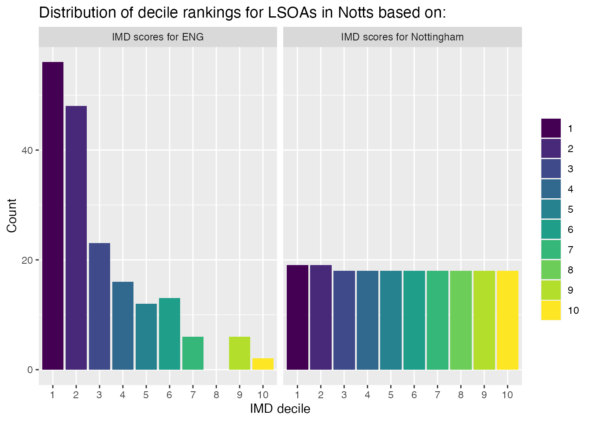

Calculate IMD deciles within local authorities
Source:vignettes/calc-imd-ranks-within-la.Rmd
calc-imd-ranks-within-la.Rmd
# Load R packages ----
library(LSOApop)
library(dplyr)
library(ggplot2)
library(tidyr)
library(patchwork)Indices of Multiple Deprivation (IMD) describe the deprivation of Lower layer Super Output Areas (LSOAs) with scores ranging from 0.541 to 92.735 for the year 2019. Lower IMD scores indicate ‘less deprivation’ areas while higher IMD scores indicate ‘more deprivation.’ These scores can be grouped based on their rank, usually 10 groups (deciles) are calculated based on the IMD scores of the entire country. For the decile scores, lower deciles are representing ‘more deprived’ areas while higher deciles represent ‘less deprived’ areas. This can be confusing because IMD scores and IMD deciles are scored in opposite directions.
The distribution of the IMD deciles calculated on data from the entire country can be relatively unequal within some Local Authorities (LAs). This example illustrates this for the local authority “Nottingham” (la_code = “E06000018”).
# Plot deciles ----
imd_notts_bar <- imd %>%
filter(la_code == "E06000018") %>%
ggplot(aes(factor(imd_decile), fill = factor(imd_decile))) +
geom_bar() +
scale_fill_viridis_d() +
labs(x = "IMD decile", y = "Count", fill = "IMD decile") +
ggtitle("IMD deciles for LSOAs in\nNotts scores for ENG")
# Plot raw scores ----
imd_notts_jitter <- imd %>%
filter(la_code == "E06000018") %>%
ggplot(aes(x = imd_score, y = la_name)) +
geom_jitter(aes(colour = factor(imd_decile)),
alpha = 1, height = .3, size = 2) +
labs(x = "IMD score", y = NULL, colour = NULL) +
scale_colour_viridis_d() +
theme(legend.position = "none",
axis.text.y = element_blank(),
axis.ticks.y = element_blank()) +
ggtitle("IMD scores for LSOAs in Notts")
# Combine plots ----
imd_notts_bar + imd_notts_jitter +
plot_layout(guides = "collect") +
plot_annotation(tag_levels = 'A')
The figure above illustrates that the the distribution of IMD deciles calculated based on the whole country (see Panel A) does not reflect the variation of the raw IMD scores within the Nottingham (see Panel B). In some cases using the deciles calculated based on IMD scores for the entire country may not be ideal and it could be useful to recalculate IMD deciles within Local Authorities. The Ministry of Housing, Communities & Local Government (2019) has made some guidance on how to analyse IMD scores and frequently asked questions available.
Compare England and Local IMD deciles for Notts
To illustrate the differences between the two IMD deciles, the next code chunk prepares a new dataset for plotting. First we filter the dataset for the Local Authority “Nottingham” using filter(la_code == "E06000018") and create a long dataset that can be used for plotting.
# Pivot data from wide to long format ----
imd_by_la_plot <- imd_by_la %>%
filter(la_code == "E06000018") %>%
select(lsoa_code, la_code, la_name,
imd_decile_en = imd_decile,
imd_decile_la) %>%
pivot_longer(cols = c(imd_decile_en, imd_decile_la),
names_to = "la_rank_method") %>%
mutate(la_rank_method =
case_when(la_rank_method == "imd_decile_la" ~ paste0("IMD scores for ", la_name),
la_rank_method == "imd_decile_en" ~ "IMD scores for ENG"))
#> Adding missing grouping variables: `imd_year`As expected, this plot shows a very unequal distribution of IMD deciles when these were calculated based on the whole country and an even distribution when only the Local Authority Nottingham was used to calculate the IMD deciles.
# Plot ENG and NOTTS deciles ----
imd_by_la_plot %>%
ggplot(aes(factor(value),
fill = factor(value))) +
geom_bar() +
scale_fill_viridis_d() +
facet_wrap(~la_rank_method) +
labs(x = "IMD decile",
y = "Count",
fill = NULL) +
ggtitle("Distribution of decile rankings for LSOAs in Notts based on:")
Additional resources
A blog post by Turner (2021) also discusses how to calculate local IMD scores illustrating examples in SQL and R.